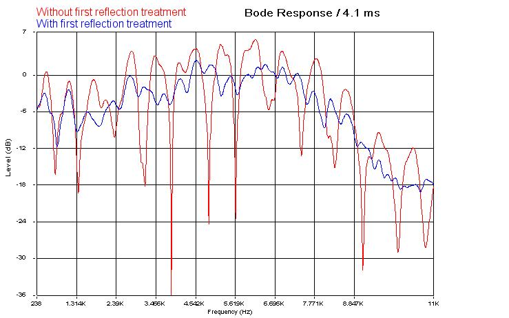

There are two kinds of far-field measurement: gated and not-gated
one.
In the gated measurement we set the markers so that we limit the data
to be used
to calculate the frequency response.
Eliminating reflections from the measurement in this way allows anechoic testing to be
conducted in a normal room.
The relationship is a simple one: if you apply a time window of 6 milliseconds (0.006s
�not unusual for measurements conducted in a typical domestic room), then the frequency
resolution of the measurement will be limited to 1/0.006 = 167 Hz.
The not-gated far-field measurement, instead, uses all the data
including the
room response, and is useful to see how the speakers will sound in the environment they
will be used, helping us understand where to place them.
In the far field measurement the microphone is placed at a distance at which the driver
looks like a point source and its sound pressure level is inversely proportional with
its distance from the mic (6 dB drop for each doubling of distance).
The industry standard sets this distance to 1 meter to allow
integration of the
various drivers in a front baffle, that is by 1 meter usually the woofer and tweeter
response have added together so a single test gets both (however when testing speakers
that uses line sources, like ribbon or array drivers, the mic-speaker distance is
increased to 2 meters).
If you are testing drivers separately then you can use any distance that works but be
aware that if it's true that a less than 1 meter distance increases the signal to noise
ratio, it's also true that a too close distance causes the driver not to act as a point
source, thus the measurement cannot be considered far-field.
Is common to use a distance equal to 4-5 times the driver diaphragm diameter, but not
exceeding more than 1 meter: it rarely works for anechoic (gated) measurements cause the
reflections are very close to the signal and you don't get any low frequency response
(unless you have a huge measurement room, where floor-ceiling-sidewall reflections
happens very late).
Using 1 meter or more for far-field (not gated) in-room response is
just fine.
In the gated measurement it is very important to place the loudspeaker in the room
center, so that all the parallel walls are equally far from it.
I use to put the speaker on a stand to center it between the floor and the ceiling. Also
put some absorbing mat on the floor between the mic and the speaker, as well as on the
microphone stand.
Calculate first floor reflection
When the speaker in the middle of the room on the floor,
as far as possible away from walls inhibited, then the
first reflection is the floor reflection.
The chassis under test and the measuring microphone are
both at the height of 1 meter above the
floor.
The linear distance X between chassis and microphone is
also 1 meter.
The floor reflected wave has a greater distance to the
microphone.
This is basically a delayed version of a primary signal
that is produced when two or more loudspeakers are
playing the same signal at different distances from the
listener.
In any enclosed space listeners hear a mixture of direct
and reflected sound. Because the reflected sound takes
longer to reach our ears,
it constitutes a delayed version of the direct
sound and a comb filter is created where the
two
combine at the listener. The extent of its audibility
depends on how lively
the room is to allow the reflected sounds to average out
the overall response.
Note that this interference may be constructive
(additive)
or destructive (subtractive).
|
|

fig. 1
Early reflections are those which reach the listener
within a delay of 15 ms relative to the direct signal.
The retarded sound creates phase problems by combining
to the direct one. The result is numerous dips in the
frequency response.
|
|
|

fig. 2
From fig. 2 becomes clear that sound energy starts arrive after roughly speaking
2.7 ms at the mictofoon.
This sound front is followed by response in the form of a subdued ultrasound which is
reduced after 6 ms to a very low level.
After 6.3 ms a second, smaller quantity of sound energy arrive. This is
the floor
reflection.
A third front on approximately 10.5 ms is the reflection against the
ceiling.
Finally we see a fourth (negative) front at 12 ms, this is the
reflection against
a sidewall.
|
|
Measurement Approach
|
Implementation
|
Advantages
|
Disadvantages
|
Limits
|
|
Anechoic
Chamber
|
Acoustical
measurements done within an indoor, (ideally) reflection-free environment
|
Climate-controlled,
artificial environment in which to measure amplitude response, noise &
distortion, diffraction effect & directional response characteristics
|
Cost;
extremely large chamber needed for accurate LF amplitude response, noise
& distortion, etc measurement
|
Chamber
, device under test (DUT) size; depth, type & configuration of
absorptive
material used within the chamber
|
|
Ground
Plane Measurement
|
Measurement
done with the DUT & microphone typically placed on the ground, with the
emissive radiating surface(s) pointed at the microphone
|
Low
cost; ease of implementation, within known limits, can provide accurate
measurement data
|
Upper
& lower frequency limits. Other than the ground upon which it rests, DUT
must be placed well away from any reflective surfaces or objects large
enough
to influence measured amplitude response
|
Noise
pollution,
Inclement
weather
(when
done outdoors)
|
|
Half-Space
or Hemispherical Free Field Measurement
|
Device
affixed flush-mount with surface such as baffle, ground surface or clear
wall
of Hemi-anechoic chamber
|
Depending
on implementation and type of data sought, can provide excellent results
|
Cost
of indoor Hemi-anechoic chamber; use of baffle invites cancellation?. Out
door, in-ground placement requires DUT to be placed well away from any
reflective surfaces or objects large enough to influence measurements
|
Approach
requires all emissive radiators be on one side of the cabinet
|
|
Windowing (gated)
|
Measurement taken and unwanted data windowed out
|
Fast data acquisition & post-processing
|
Requires significant data post-processing and the ability to skillfully
interpret the
results
|
LF
measurement accuracy defined by environmentally determined window length.
Poor tolerance for time variance.
|
|
Near Field Measurement
|
Measurement
done with microphone placed near to, centered on and normal to front
emissive
surface of each acoustic radiator
|
When
implemented correctly, the near-field amplitude response provides for an
accurate facsimile of the far field response
|
Multiple
emissive surfaces require multiple measurements along with subsequent post
processing
|
Upper
frequency limit determined by size of DUT.
|